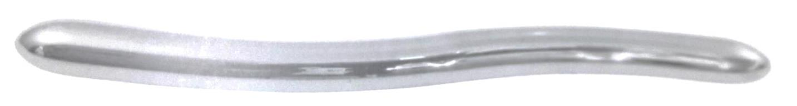
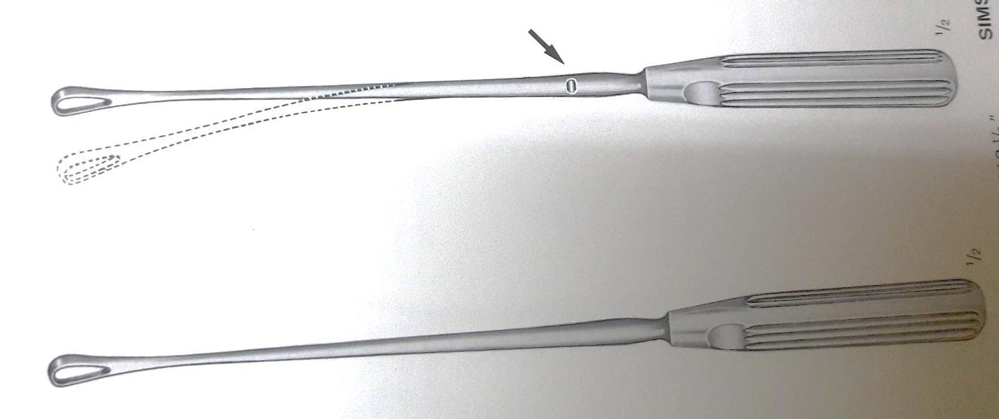
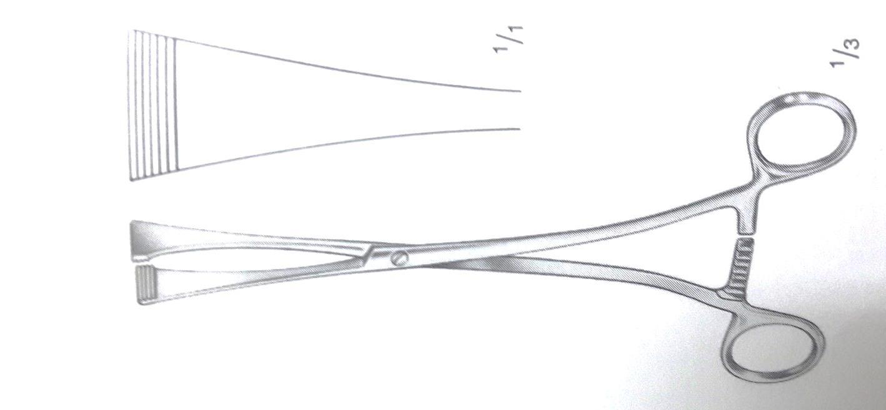
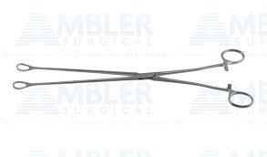
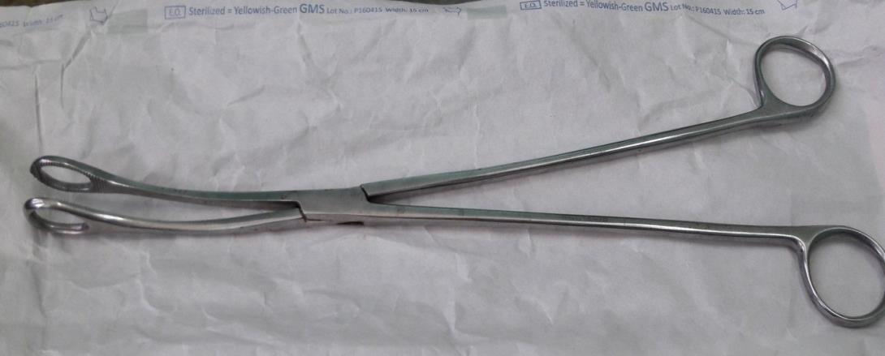
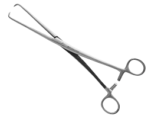
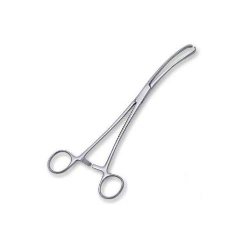
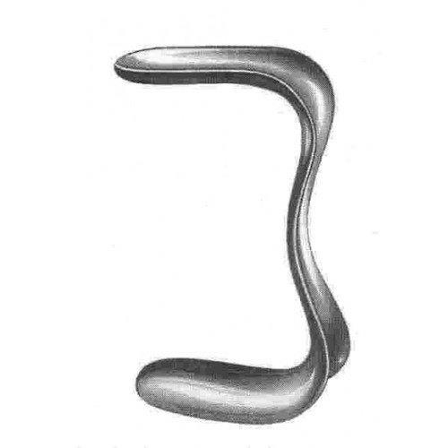
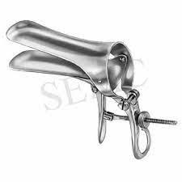
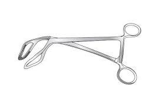

Uterine Sound · Catheter · Dilators · Curette · Forceps · Specula · Clamps
| Property | Detail |
|---|---|
| Material/design | Malleable |
| Tip diameter | 3 to 4 mm |
| Tip shape | Blunt |
| Scale | Graduated |
| Shape | Curved |
Indications:
Types:
Indications:
Types:
Indications:

Types: Blunt and sharp.
Indications:

Green Armytage Forceps

Ring Forceps

Ovum Forceps

Vulsellum




Use: Holding the uterus in cases of hysterectomy or myomectomy.

| Instrument | Key Use | Key Feature |
|---|---|---|
| Uterine Sound | Measure cervical/uterine length | Malleable, blunt tip, graduated |
| Female Uterine Catheter | Empty bladder in gynecologic surgery | Rubber / Metal / Plastic |
| Cervical Dilators | Dilate cervix for intrauterine surgery | Hegar & Fenton types |
| Uterine Curette | Evacuate uterus (abortion, AUB) | Blunt & Sharp types |
| Green Armytage | Hold uterine incision edges in CS | Locking forceps |
| Ring Forceps | Grasp cervix / remove POCs | Has lock |
| Ovum Forceps | Remove products of conception | No lock (like ring) |
| Vulsellum | Hold cervix in operations | Single / multiple toothed |
| Sims Speculum | Vaginal operations / VVF diagnosis | Single blade |
| Cusco Speculum | Cervical visualization / Pap smear | Bivalve |
| Uterine Holding Clamp | Grasp uterus in hysterectomy | Clamp design |